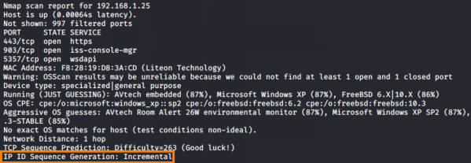
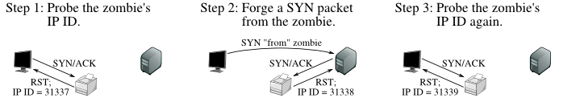
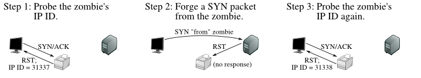

How works Idle Scan
Finding a Working Idle Scan Zombie Host
Before perform an Idle Scan(-sI) we have to find an appropriate zombie host
This host needs to
assign IP
ID packets incrementally on a global basis (rather than
per-host it communicates with) and
idle meaning that there should be
no other traffic on the zombie that will disturb the IP ID.
To do that we have to determine the
IP
ID Sequence Generation algorithm type, by which the target OS is generating new
IP IDs.
Nmap determine the
type of this
algorithm by collecting a series of IP headers and subtracting the value of each
IP ID field from the next one to get an array of differences.
If we find that
the IP ID Sequence Generation algorithm assigned by nmap is
incremental we can
say also that this host is
idle because the
difference
between probes are less than 10 and this meaning that the host is a good candidate to be a Zombie.
Idle scan of an
open portStep 1:
◇ The attacker send a SYN/ACK to the Zombie host
◇ The
zombie
not expecting a SYN/ACK sends to the attacker a RST,
disclosing in this way its IP ID(e.g:31337)
Step 2:
◇ The attacker forge a SYN packet(
IP spoofing) with the zombie source IP address with the purpose of
impersonate the Zombie host and send the forged packet to the target
◇ The target sends a
SYN/ACK(
port open) to the Zombie host in response to the SYN
that appears to come from the zombie
◇ The zombie
not
expecting a SYN/ACK sends to the target a RST, incrementing its IP ID(e.g:31338)
Step 3:
◇ The
attacker send again a SYN/ACK to the Zombie host
◇ The zombie
not
expecting a SYN/ACK sends to the attacker a RST, disclosing in this way its IP ID(e.g:31339).
The
attacker in this way sees that the IP ID is incremented by 2 (from the initial probe of the Step 1) in this way we
know that the
port is open, because otherwise in the Step 2 the Zombie would not
send a RST
Idle scan of a closed
portStep 1(same
of the open port):
◇ The attacker send a SYN/ACK to the Zombie host
◇ The zombie
not expecting a SYN/ACK sends to the attacker a RST, disclosing in this
way its IP ID(e.g:31337)
Step 2:
◇ The attacker forge a SYN packet(
IP spoofing) with the zombie source IP address with the purpose of
impersonate the Zombie host and send the forged packet to the target
◇ The target sends a RST(
port closed) to the Zombie host in response to the SYN that appears to
come from the zombie
◇ The Zombie host simply ignores the unsolicited packet RST leaving its IP ID
unchanged
Step 3:
◇ The attacker send again a SYN/ACK to the Zombie host
◇The zombie
not expecting a SYN/ACK sends to the attacker a RST, disclosing in this
way its IP ID(e.g:31338).
The attacker in this way sees that the IP ID is incremented only by 1 (from the
initial probe of the Step 1) in this way we know that the
port is closed,
because in the Step 2 the Zombie have received an RST from the target and there was not need to response
Bibliography:
https://en.wikipedia.org/wiki/IP_fragmentationhttps://nmap.org/book/idlescan.html